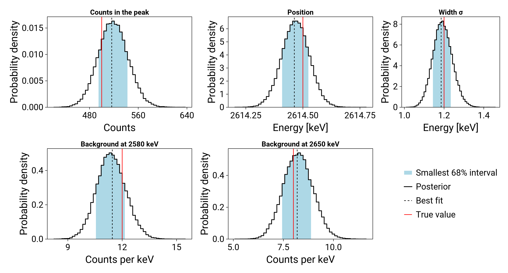
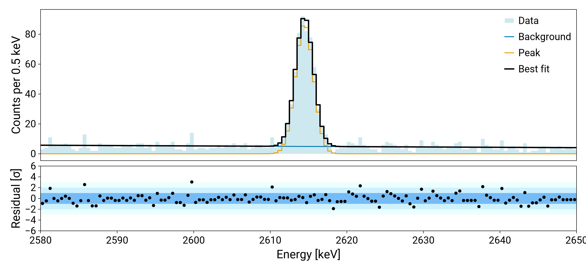

Tutorial: fitting a peak
This tutorial fits a γ line on a linear background with analytic functions only, without any simulated spectrum. The peak and the background are two separate components, so the result has the prediction of each. The data are made from the same model with known parameters, so the result can be compared with the truth at the end.
The model
The peak is a Gaussian with n_peak counts in total, its position mu and width sigma in keV. The background is a straight line from b_low counts per keV at 2580 keV to b_high at 2650 keV, the ends of the fit range. Each function of the energy E in keV gives the expected number of counts per keV.
Written with its two end points, the line cannot become negative for any value of the parameters in the ranges below. This matters: a negative prediction has no Poisson probability, and the fit stops with an error.
using Refit
using StatsBase
peak(E, p) = p.n_peak * exp(-(E - p.mu)^2 / (2 * p.sigma^2)) / (sqrt(2π) * p.sigma)
background(E, p) = p.b_low + (p.b_high - p.b_low) * (E - 2580) / 70
components = Dict(:peak => (analytic = peak,), :background => (analytic = background,))There is no histogram to take the binning from, so the bin edges in keV are given with edges. The functions are evaluated at the centre of each bin, so the bins of 0.5 keV are narrow compared with the width of the peak. With wider bins, points_per_bin evaluates them at several points in each bin and takes the average.
model, bin_edges = build_forward_model(
components;
e_low = 2580,
e_high = 2650,
edges = 2580.0:0.5:2650.0,
)Fake data
The measured counts are drawn from a Poisson distribution around the prediction of the model for known parameters:
using Distributions
using Random
truth = (n_peak = 500.0, mu = 2614.5, sigma = 1.2, b_low = 12.0, b_high = 8.0)
Random.seed!(1)
counts = rand.(Poisson.(model(truth)))
likelihood = build_likelihood(counts, model)Priors and sampling
get_priors only estimates ranges for the activities of simulated spectra, so here every range is given by hand. build_prior_dist makes a uniform prior on each.
using IntervalSets
using BAT
prior = build_prior_dist(
Dict(
:n_peak => 0.0 .. 2000.0,
:mu => 2605.0 .. 2625.0,
:sigma => 0.3 .. 5.0,
:b_low => 0.0 .. 50.0,
:b_high => 0.0 .. 50.0,
),
)
samples = bat_sample(
PosteriorMeasure(likelihood, prior),
TransformedMCMC(
proposal = RandomWalk(),
strict = false,
burnin = MCMCMultiCycleBurnin(nsteps_per_cycle = 20_000, max_ncycles = 50),
nsteps = 10^5,
nchains = 4,
),
).result[ Info: MCMCChainPoolInit: trying to generate 4 viable MCMC chain state(s).
[ Info: Selected 4 MCMC chain state(s).
[ Info: Begin tuning of 4 MCMC chain(s).
[ Info: MCMC Tuning cycle 1 finished, 4 chains, 4 tuned, 4 converged.
[ Info: MCMC tuning of 4 chains successful after 1 cycle(s).
[ Info: Running post-tuning stabilization steps for 4 MCMC chain(s).
[ Info: Generate main samples using 4 MCMC chain(s).Result
The marginal posterior of each parameter, with the best fit and the true value:
using LegendMakie
import Format
import CairoMakie
best = mode(samples)
# the title and the axis label of each panel
labels = (
n_peak = ("Counts in the peak", "Counts"),
mu = ("Position", "Energy [keV]"),
sigma = ("Width σ", "Energy [keV]"),
b_low = ("Background at 2580 keV", "Counts per keV"),
b_high = ("Background at 2650 keV", "Counts per keV"),
)
fig = CairoMakie.Figure(size = (1300, 700))
for (i, name) in enumerate(keys(labels))
ax = CairoMakie.Axis(
fig[fld1(i, 3), mod1(i, 3)];
title = labels[name][1],
xlabel = labels[name][2],
ylabel = "Probability density",
xticks = CairoMakie.LinearTicks(3),
)
plot_posterior!(
ax,
samples,
name;
best = best[name],
truth = truth[name],
bandcolor = :lightblue,
)
end
# the legend of the first panel, in the empty place of the grid
CairoMakie.Legend(fig[2, 3], fig.content[1]; framevisible = false)
fig
The prediction of the best fit, and of each component, compared with the data:
data_hist = counts_to_histogram(counts, bin_edges)
hists = get_best_fit_histograms(best, model, bin_edges)
fig, ax, ax_res = fit_axes(; scale = :linear, ylabel = "Counts per 0.5 keV")
plot_hist!(ax, data_hist; filled = true, alpha = 0.6, color = :lightblue, label = "Data")
plot_hist!(ax, hists[:background]; label = "Background")
plot_hist!(ax, hists[:peak]; label = "Peak")
plot_hist!(ax, hists[:total]; color = :black, linewidth = 3, label = "Best fit")
plot_residuals!(ax_res, hists[:total], data_hist)
CairoMakie.xlims!(ax, 2580, 2650)
CairoMakie.ylims!(ax_res, -6, 6)
CairoMakie.axislegend(ax)
fig